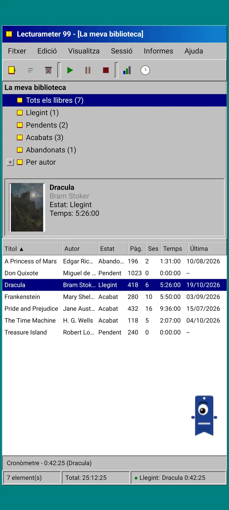
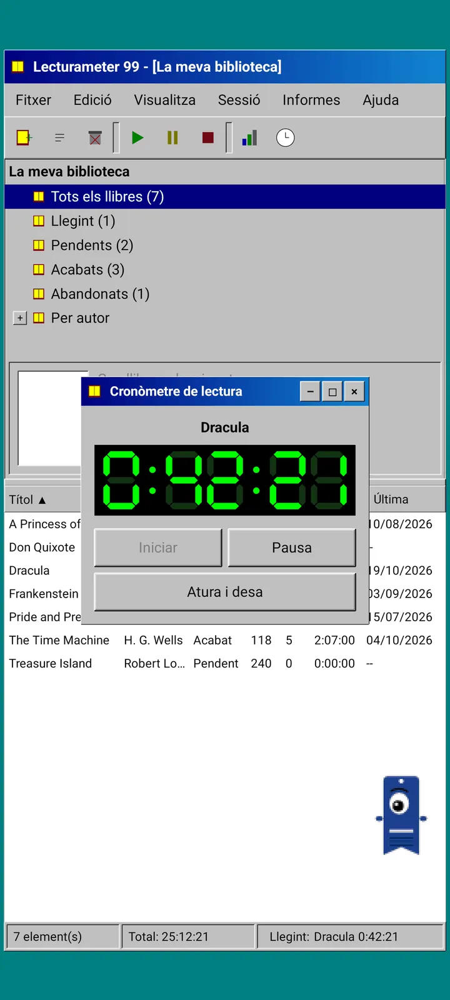
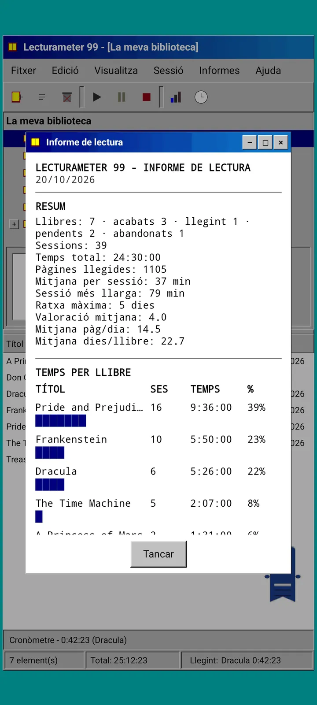
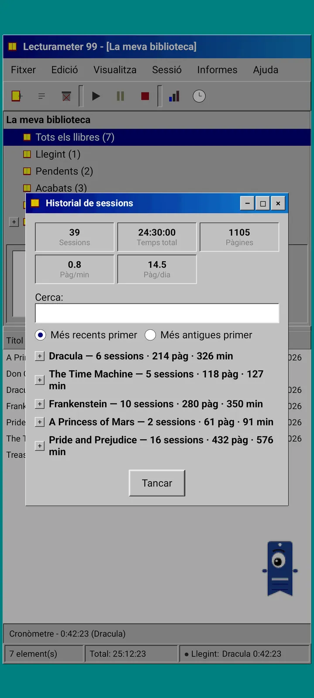
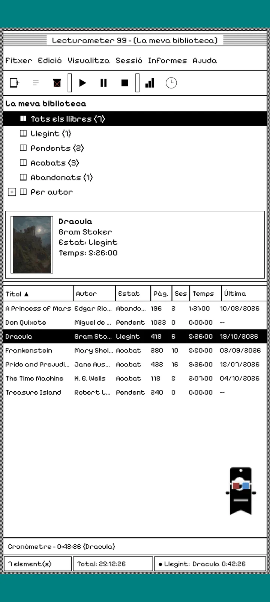
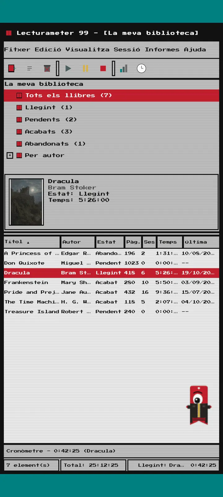
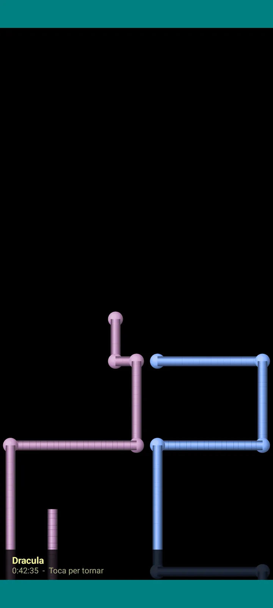

Lecturameter 1999
Lecturameter com si l'haguessis instal·lat des d'un CD-ROM el 1999. Un client alternatiu de l'app, amb finestres, menús i taules, que obre les teves còpies de seguretat reals.

Què és
Un programa d'escriptori de finals dels noranta ficat al teu mòbil. Una sola finestra sobre un escriptori verd blavós, barra de menús, barra d'eines, arbre de carpetes, una taula densa i barra d'estat.
- Biblioteca en arbre: tots els llibres, llegint, pendents, acabats, abandonats i per autor
- Taula amb títol, autor, estat, pàgines, sessions, temps i darrera lectura. Toca la capçalera d'una columna per ordenar
- Cerca de llibres real, amb el mateix catàleg que fa servir Lecturameter
- Importa i exporta la còpia de seguretat de Lecturameter i el CSV de Goodreads. Les teves dades entren i surten sense perdre res

Per què existeix
Un experiment: reconstruir la idea de Lecturameter des de zero amb premisses de disseny radicalment diferents, sense tocar l'app real. De totes les reinterpretacions, la de 1999 va ser la que més em va agradar, així que la vaig acabar com un exercici divertit i la vaig convertir en un client complet. És més senzilla que Lecturameter a propòsit: és un experiment i, en principi, no tindrà més desenvolupament.
- Cronòmetre en una finestra flotant amb pantalla LCD verda. Es mou, es minimitza a una barra de tasques i continua comptant a la barra d'estat
- Quan l'atures, el diàleg de desar la sessió et demana les pàgines i calcula el teu ritme, igual que a Lecturameter
- Les sessions desades són sessions de Lecturameter: tornen a l'app moderna si exportes una còpia de seguretat de Lecturameter 1999 i la importes a Lecturameter.

Informe de lectura
Les estadístiques són un informe imprès: resum, temps per llibre amb barres de blocs, velocitat en pàgines per dia, un calendari de l'any dibuixat amb caràcters i els últims set dies.

Historial de sessions
Sessions agrupades per llibre en un arbre amb més i menys, amb cinc xifres a dalt: sessions, temps total, pàgines, pàgines per minut i pàgines per dia.

Desar la sessió
Data, minuts, pàgina inicial i final, comentari. El resum calcula les pàgines i el ritme mentre escrius. Si arribes a l'última pàgina, et pregunta si has acabat el llibre.

Pagi 99
El Pagi també viatja al 1999: pixelat i lliure per la pantalla com els assistents d'oficina de l'època. El pots arrossegar, diu una frase quan el toques i mostra consells en globus grocs.
Temes
Clàssic 98 és gratuït i ve per defecte. El paquet n'afegeix sis més, cadascun amb el seu fons i els seus sons.

Es tria al menú Visualització
Visualització, Tema... obre una finestra amb els set temes. El canvi arriba alhora a totes les finestres, al cronòmetre i al Pagi.
- Clàssic 98, gratuït i per defecte: finestres grises, barres de títol blau marí i escriptori verd blavós
- Paquet de temes: 1984, Llaminadura, Memòria, Torres, Nucli i 8 bits
- Cada tema porta el seu fons d'escriptori i els seus sons per als tocs, les finestres i el cronòmetre
- Visualització, Sons del tema els apaga si llegeixes en silenci

Clàssic 98
Finestres grises, barres de títol blau marí i escriptori verd blavós. Gratuït, és el tema amb què s'obre l'app.

1984
Un escriptori en blanc i negre d'un bit, amb trames de punts i finestres quadrades.

Llaminadura
Plàstic translúcid de colors, botons arrodonits i ratlles al fons.

Memòria
Els menús d'una consola de discos dels noranta, en blaus foscos.

Torres
Una altra consola de discos dels noranta, blau nit amb línies blau clar.

Nucli
Una consola negra i verda, com una pantalla que no s'apaga mai.

8 bits
Píxels grossos, pocs colors i lletres de blocs.

Prova'l abans de pagar
Toca un tema bloquejat i tota l'app canvia a aquest tema. Si tanques sense comprar, torna el que tenies.
Estalvis de pantalla
Només apareixen amb el cronòmetre en marxa i sense tocar el mòbil. Esperen 1, 3 o 5 minuts, o mai. Un toc i tornes, i el cronòmetre continua comptant.

Llibres voladors
Llibres de píxels que volen batent les tapes per una pantalla negra.

Camp de lletres
Lletres de molts alfabets que passen a poc a poc, com un camp d'estrelles.

Canonades de pàgines
Canonades fetes de pàgines que es dibuixen soles fins que omplen la pantalla.

Pagi rebota
El Pagi rebotant contra les vores de la pantalla.

Rellotge de lectura
El temps de la sessió en xifres LCD grans.

Disfresses per al Pagi
Vuit disfresses per al Pagi 99. Es trien a Visualització, Disfressa del Pagi..., i te les pots provar abans de pagar.
- Reproductor de casset
- Gorra del revés
- Ulleres 3D
- Ulleres de sol de neó
- Disquet a la mà
- Jaqueta de cuir
- Mascota de butxaca
- Corona de cartró
Botiga
L'app és gratuïta i completa per registrar les teves lectures. El que es compra només canvia com es veu.
Tota l'app, sense límit de temps.
- Biblioteca, cerca, cronòmetre i sessions
- Informe de lectura i historial de sessions
- Còpia de seguretat de Lecturameter i CSV de Goodreads, d'anada i tornada
- Tema Clàssic 98 i Pagi 99
- Sense compte i sense anuncis
Pagaments únics, sense subscripcions.
- Paquet de temes, 3,49 €: 6 temes amb fons i sons, i a més els estalvis de pantalla
- Estalvis de pantalla, 1,99 €: els 5 estalvis de pantalla
- Disfresses del Pagi, 1,99 €: les 8 disfresses
- Tot el 1999, 4,49 €: temes, estalvis de pantalla i disfresses
Propines opcionals al menú Ajuda, si em vols convidar a un cafè.
Els temes i les disfresses es poden provar en directe abans de pagar. Si tanques sense comprar, torna el que tenies.
Què canvia respecte a Lecturameter
Igual que Lecturameter
- Les mateixes dades: llibres, sessions, estats, puntuacions i notes. El fitxer de còpia de seguretat és el mateix a les dues apps.
- Cerca de llibres per títol o autor.
- Cronòmetre real: continua comptant en segon pla i encara que tanquis l'app.
- Sense compte, sense anuncis i sense connexió, excepte per cercar llibres.
- Els mateixos idiomes que Lecturameter.
Només a l'edició 1999
- Una interfície d'escriptori de 1999. Res de Material.
- Finestres de veritat: les arrossegues, les minimitzes i les tanques amb la creu.
- Informe de lectura en text, amb un calendari dibuixat amb caràcters.
- Menú contextual en mantenir premut i dreceres de teclat si en connectes un.
- Pagi 99 pixelat amb globus de consells.
- Temes opcionals amb el seu fons i els seus sons, estalvis de pantalla mentre corre el cronòmetre i disfresses per al Pagi.
El que no té, a propòsit
- Sense Pro i sense subscripció. Registrar les teves lectures és tot gratuït; la botiga només ven aspecte.
- Sense reptes, bingos, resum anual ni ginys.
- Sense sessió immersiva, sons ambientals ni còpia de seguretat a Google Drive. La còpia es desa com a fitxer.
Prova tancada
Lecturameter 1999 és en prova tancada a Google Play. iOS arribarà més endavant, encara sense data.
- Uneix-te al grup groups.google.com/g/lecturameter-1999
- Apunta't com a provador a play.google.com/apps/testing/com.lecturameter.r1999
- Instal·la-la des de Google Play
En prova tancada a Google Play, iOS més endavant. Llegeix l'entrada del blog per veure d'on surt i què pots esperar.